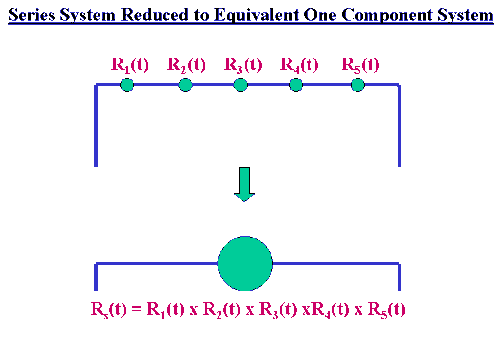

|
8.
Assessing Product Reliability
8.1. Introduction 8.1.8. How can you evaluate reliability from the "bottom-up" (component failure mode to system failure rate)?
|
|||
| The series model is used to go from individual components to the entire system, assuming the system fails when the first component fails and all components fail or survive independently of one another |
The Series Model is used to build up from components to sub-assemblies
and systems. It only applies to non replaceable populations (or first failures
of populations of systems). The assumptions and formulas for the Series Model
are identical to those for the Competing Risk Model, with the \(k\)
failure modes within a component replaced by the \(n\)
components within a system.
The following three assumptions are needed.
|
||
| Add failure rates and multiply reliabilities in the Series Model |
When the Series Model assumptions hold we have:
$$ \begin{eqnarray}
R_S(t) & = & \prod_{i=1}^n R_i(t) \\
& & \\
F_S(t) & = & 1 - \prod_{i-1}^n \left[ 1 - F_i(t) \right] \\
& & \\
h_S(t) & = & \sum_{i=1}^n h_i(t)
\end{eqnarray} $$
with the subscript \(S\)
referring to the entire system and the subscript \(i\)
referring to the \(i\)-th
component.
Note that the above holds for any arbitrary component life distribution models, as long as "independence" and "first component failure causes the system to fail" both hold. The analogy to a series circuit is useful. The entire system has \(n\) components in series. The system fails when current no longer flows and each component operates or fails independently of all the others. The schematic below shows a system with 5 components in series "replaced" by an "equivalent" (as far as reliability is concerned) system with only one component.  |
||